Organize, analyze, and optimize your astrophotography workflow with powerful AI-driven tools
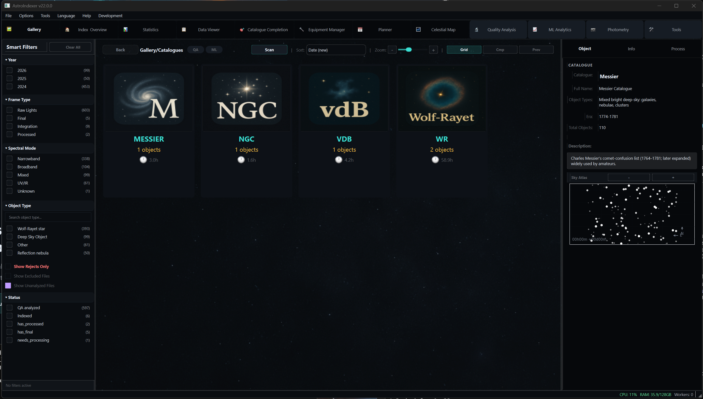
Everything you need to manage your astronomical imaging data
Automatically organize your FITS and XISF files with intelligent cataloging
Advanced image quality metrics including FWHM, HFR, and star detection
Track and optimize performance across all your imaging equipment
Machine learning insights to improve your imaging sessions
Plan optimal imaging sessions based on weather and target visibility
Seamless integration with PixInsight, N.I.N.A, and other tools
Interactive sky map showing your imaging coverage and future targets
Powerful tools designed for serious astrophotographers
Browse your entire astrophotography collection with lightning-fast virtual scrolling. View thumbnails of 100,000+ images without lag.
Your command center for all imaging data. Get instant insights into your collection with smart categorization.
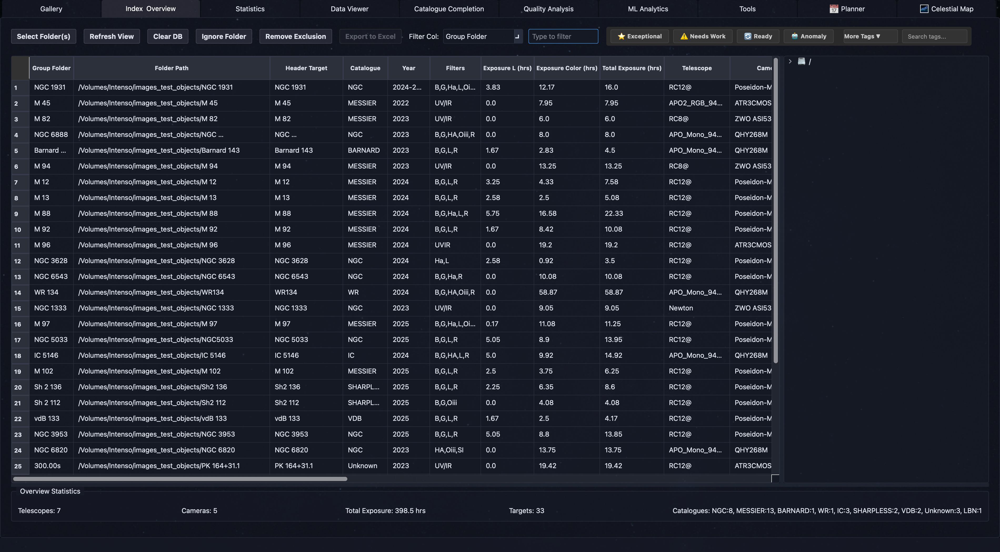
Point AstroIndexer at your imaging folder and let Autopilot handle everything: scanning, equipment detection, tagging, calibration set creation, gain/offset setup, quality analysis, and ML analytics -- all in one automated pipeline.
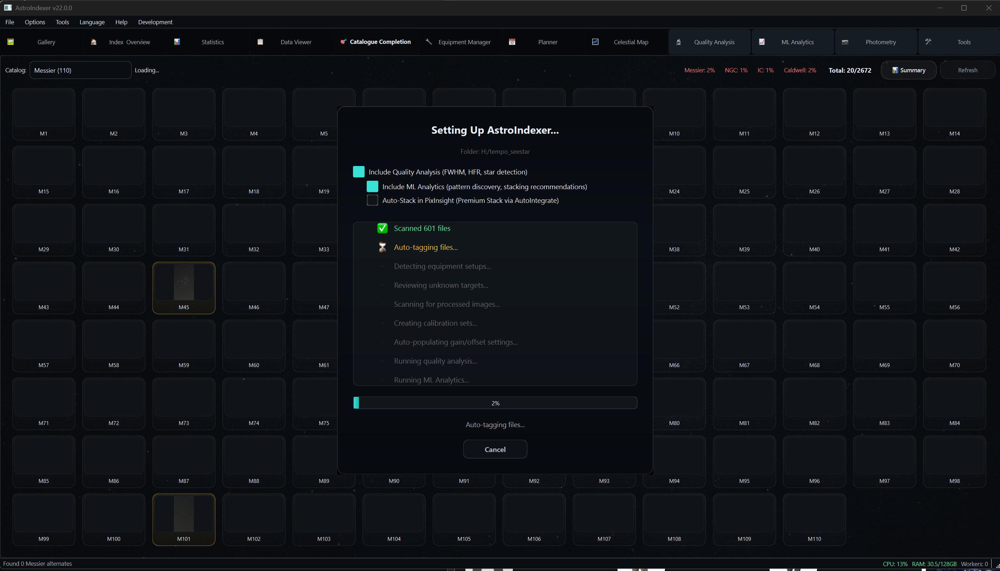
Comprehensive image quality metrics with FWHM, HFR, eccentricity, and star count analysis. Automatically grade and sort your images to identify the best frames for stacking.
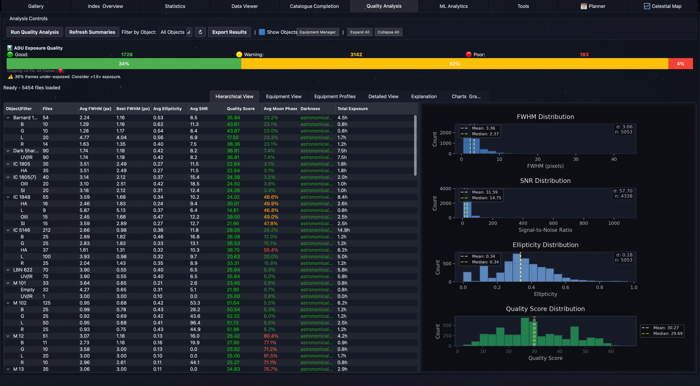
Auto-discovers telescopes, cameras, and filters from your FITS headers. Automatic filter recognition, gain/offset detection, QE sensor curves, calibration library with target linking, and observing site configuration.
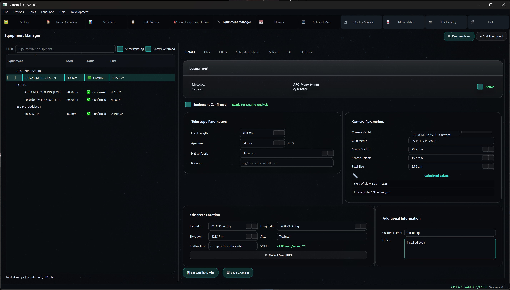
Recommends suitable targets based on your equipment capabilities, observing location, time of year, and sky conditions. 5-state project pipeline with Smart Plan scoring.
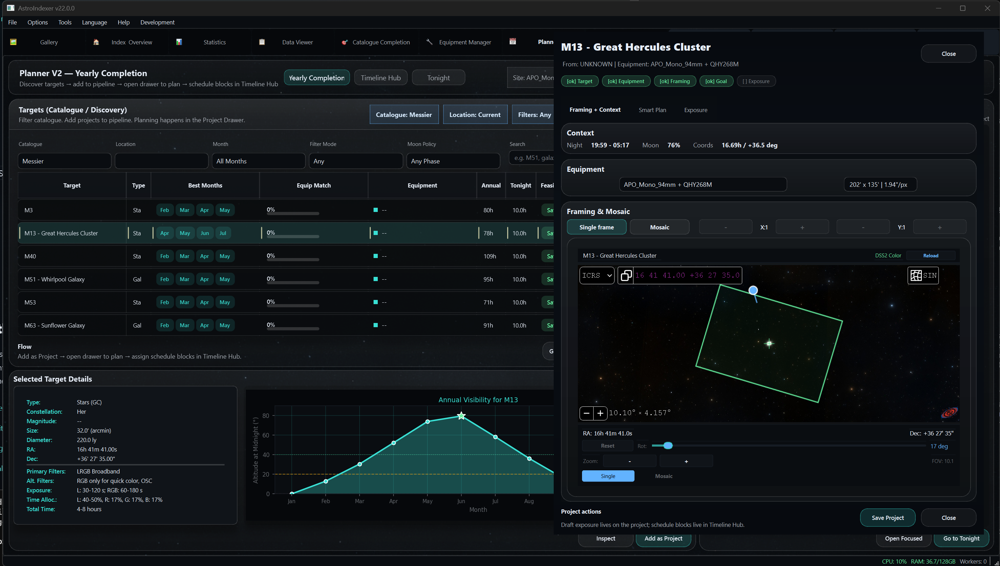
Interactive sky atlas with field-of-view overlays showing exactly what your equipment captures. Plan mosaic panels, check framing, and discover new targets.

Visualize your entire imaging collection on an interactive sky map. See coverage gaps, plan future sessions, and explore your astrophotography journey.
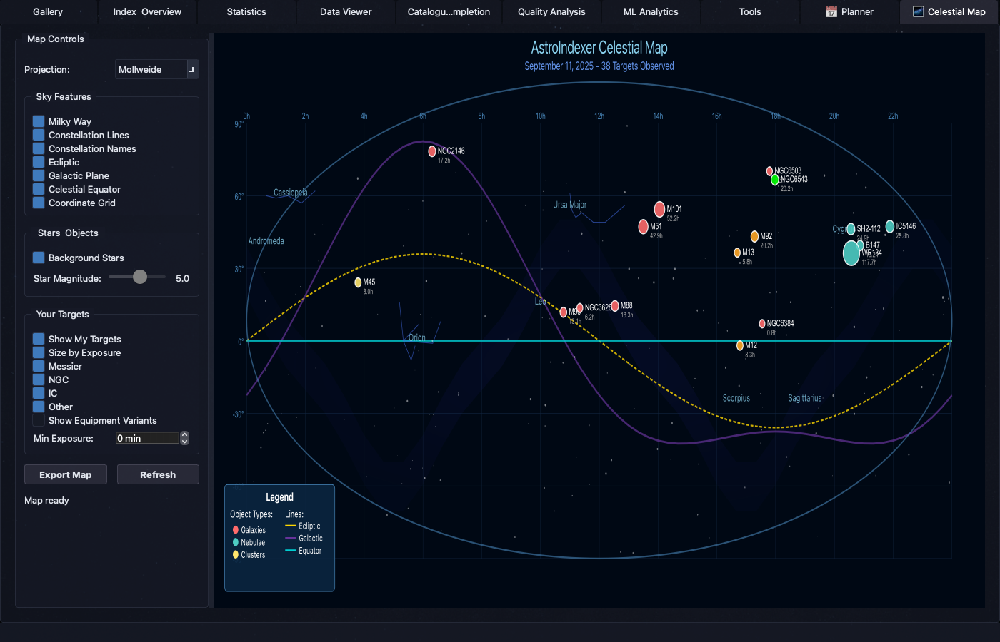
Sync your AstroBin gallery with automatic catalogue-ID matching. See which targets you have published, push acquisition data, and display published badges in your local gallery.
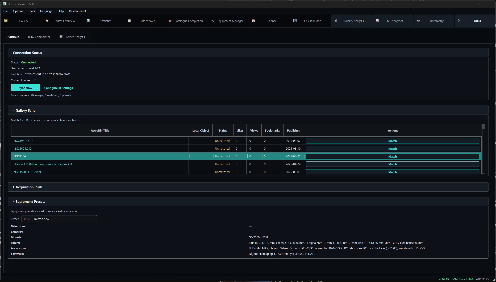
PixInsight-aligned frame selection with Winsorized Sigma Clipping at threshold 2.2. AutoIntegrate Combination Recommender selects the optimal palette from 11 options based on your filters and object type.
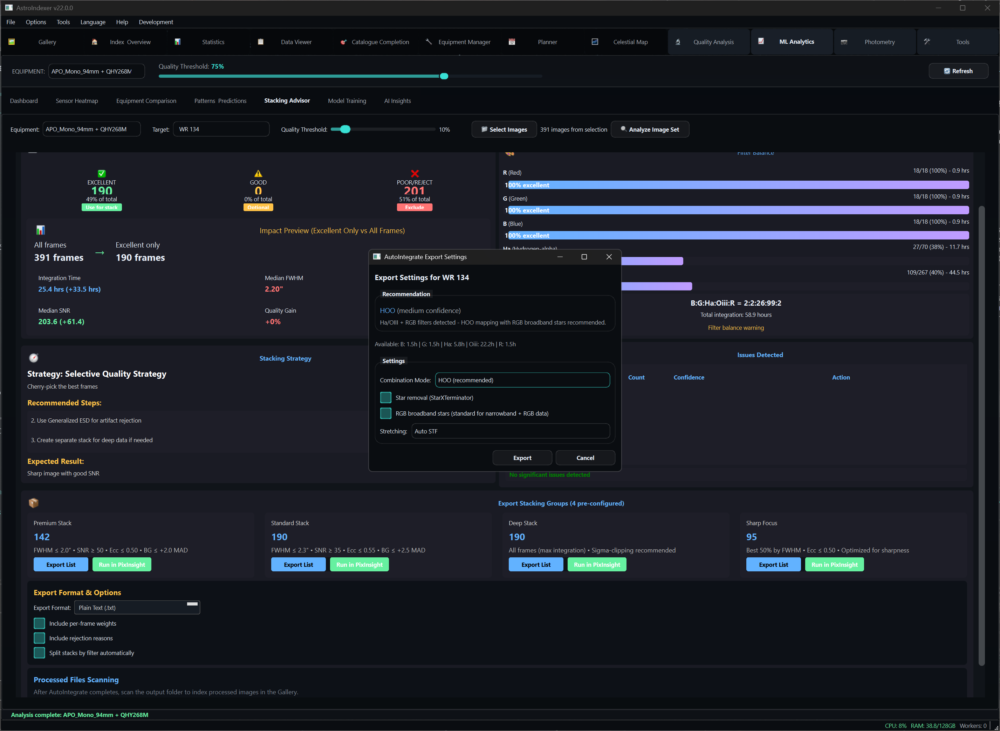
Track your progress through Messier, NGC, IC, and other astronomical catalogs with interactive visual grids.
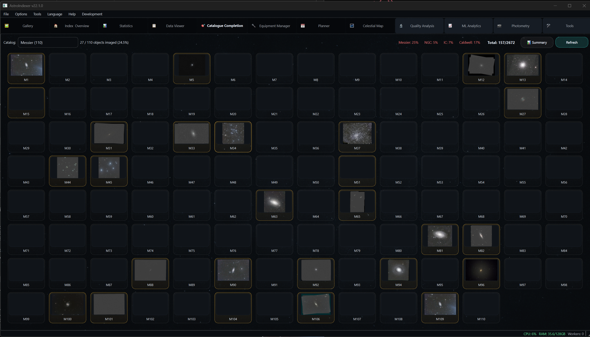
Machine learning modules that analyze your imaging history and predict optimal conditions
Comprehensive overview of all machine learning insights with real-time quality predictions and performance metrics.
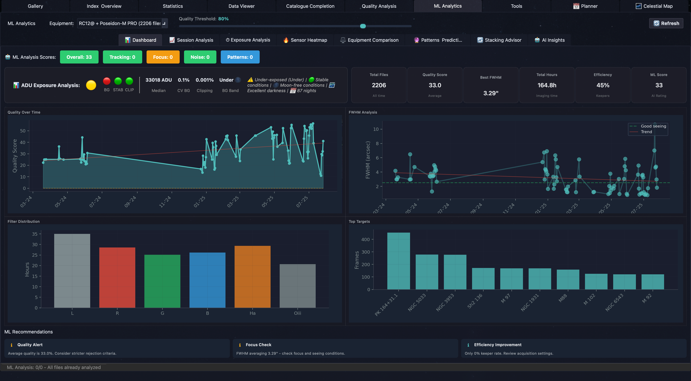
Visualize sensor performance across your entire frame to identify vignetting, dust motes, and optical aberrations.
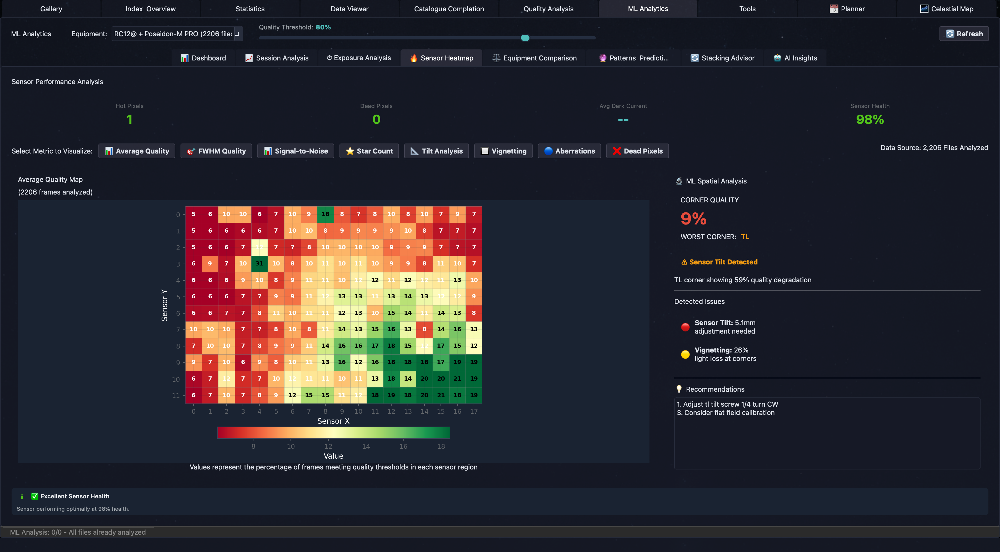
Discovers seeing bimodality, cloud cover impact, sky gradient trends, field curvature signatures, sensor tilt, and optical degradation over time.
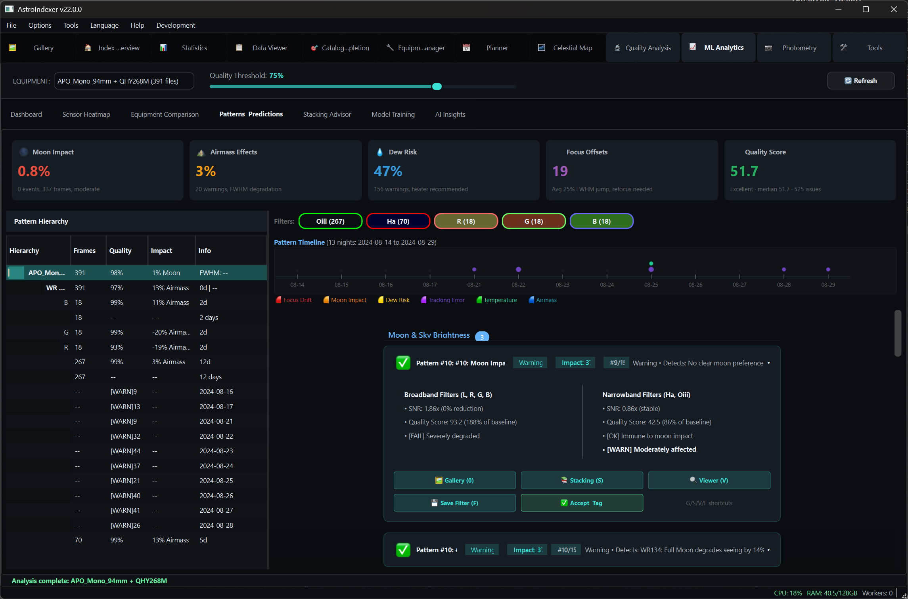
Human-readable summaries of your most impactful patterns, generated by GPT-4o or Claude. Actionable recommendations specific to your equipment and imaging style.
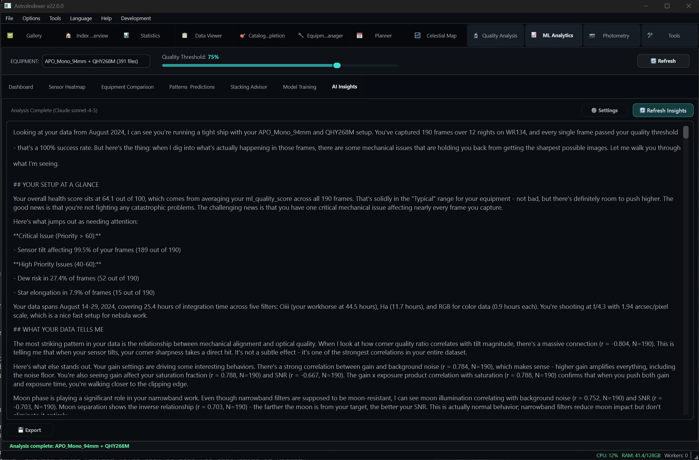
Free to try, works on all major platforms
Free 30-day trial with full access. No account required.
Flexible pricing for hobbyists and professionals